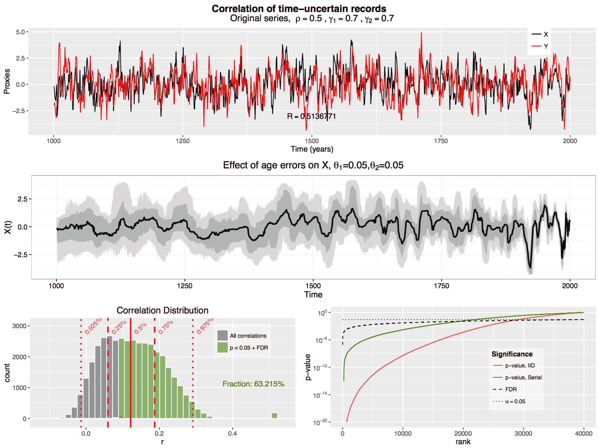

LiPD file analysis and manipulation in R
Quantifying age uncertainties is a critical component of paleoscience (paleoclimatology, paleoecology, paleontology). GeoChronR is an integrated framework that allows scientists to generate state-of-the-art age models for their records, create time-uncertain ensembles of their data, analyze those ensembles with a number of commonly-used techniques, and visualize their results in an intuitive way. The code is being developed in the open-source and community-supported R platform. Please refer to the GeoChronR Proposal for more information.
R - v0.99.903+
R Studio - v3.3.1
R devtools package - v1.12.0+
Install package in R Studio:
devtools::install_github("nickmckay/geoChronR")Load the package into the environment:
library("geoChronR")Below is an example of what this package can do. Import your LiPD dataset to get started!
If you are having issues, please let me know at heiser@nau.edu.
The project is licensed under the GNU Public License
Hosted on GitHub Pages — Theme by orderedlist